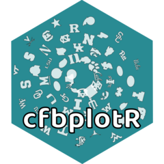

cfbplotR 
The code for this package was copied heavily from nflplotR with minor changes to support college football team logos.
The goal of cfbplotR is to provide functions and geoms that help visualization of CFB related analysis. It provides a ggplot2 geom that does the heavy lifting of plotting CFB logos in high quality, with correct aspect ratio and possible transparency.
Installation
You can install the development version from GitHub with:
if (!require("remotes")) install.packages("remotes")
remotes::install_github("Kazink36/cfbplotR")Using cfbplotR
You can follow this tutorial to see several different uses for cfbplotR. The key function in the package is geom_cfb_logo() which will add college football team logos to a ggplot.
library(cfbplotR)
library(ggplot2)
team <- valid_team_names()
team <- team[1:32]
df <- data.frame(
a = rep(1:8, 4),
b = sort(rep(1:4, 8), decreasing = TRUE),
teams = team
)
# keep alpha == 1 for all teams including an "A"
matches <- grepl("A", team)
df$alpha <- ifelse(matches, 1, 0.9)
# change color of all teams including an "o" to black and white
matches <- grepl("o", team)
df$color <- ifelse(matches, "b/w",NA)
ggplot(df, aes(x = a, y = b)) +
geom_cfb_logos(aes(team = teams, color = color, alpha = alpha), width = 0.075) +
geom_label(aes(label = teams), nudge_y = -0.35, alpha = 0.5) +
scale_color_identity() +
scale_alpha_identity() +
theme_void() 
Getting help
The best places to get help on this package are:
- messaging Jared Lee on twitter
- opening an issue
Contributing
Many hands make light work! Here are some ways you can contribute to this project:
- You can open an issue if you’d like to request specific data or report a bug/error.
Terms of Use
The R code for this package is released as open source under the MIT License. CFB data accessed by this package belong to their respective owners, and are governed by their terms of use.